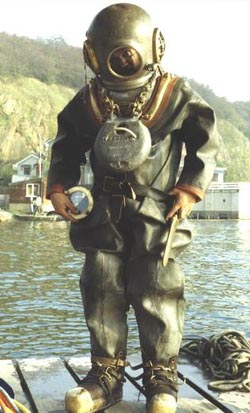
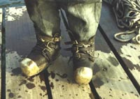

|
|
STANDARD DIVER & CANNON

COMM’S“How’s the visibility?”
DIVER
“Pretty good actually. 6 metres, maybe 5 metres.”
COMM’S
“Good. Getting enough air yet?”
DIVER
“Yes lovely.”
COMM’S
“Okay, lads.”
DIVER
“Yes that should be fine. Leave it at that”
DIVER
“Just got my umbilical caught. That’s it it’s free now. Make my way. Jump over this rock. Make my way over to the wreck site and see what I can find. Lot of debris down here. Right, take up some of the slack.”
COMM’S
“Have you located the wreck yet?”
DIVER
“Yes, found the cannon wedged between some rock. Just tie the rope to it.”
DRESS & PUMP - HARVEY PORRETT

The lead soled, brass capped boots: they weigh about 18 pounds each. The diver’s in a heavy canvas and rubberised suit. He has a leather jock strap which passes under his crutch. That holds the corselet part of the helmet down onto his shoulders. So that when the air enters the suit the helmet doesn’t rise. Breast weight: lead, 40-45 pounds of lead. A similar weight on the back. That's to give the diver some control over his attitude in the water, up and down. All seals on these pieces of equipment are made of leather.This particular model: a two cylinder, two diver pump. It’s adjustable. It can either give both cylinders of air to one diver for working deep and he could work in excess of 100 feet with that. If it was going to be used for two divers on both outlets it would be switched across, but their depth would be severely limited: they would work in around 50 feet of water. It's hand driven: it’s very hard work. You need crews on the surface, regular changeover and when the diver’s down and at moderate work the pumping crew could effectively stop pumping for a couple of minutes and he would survive, but it is usual to keep the pump just ticking over nicely all the time the diver’s down. It’s lubricated with olive oil. No mineral oils can go near air pumps. It’s very heavy: the wheels are a hundredweight each. The pump, that particular one is in excess of eight hundredweight.
|
|